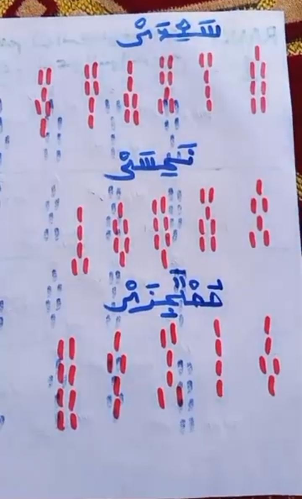

Sashin Kwararru (VIP)
Ka tabbatar ka haddace Mataki na Daya (1) kafin ka fara wannan Mataki na Biyu. Saboda idan baka haddace ba gaskiya zaka bata karatunka.

Wannan matakin ya zama dole ka san shi saboda idan ka tashi yin hukunci, dole sai ka nemi tauraro mai kyau ko marar kyau ko tsaka-tsakiya.
Duk inda ka ji an ce ma abu yana da kyau to sai da aka bi ta wannan hanyar. Misali, a ce ma auren yana da kyau to an samu daya daga cikin taurari masu kyau kenan. Ko a ce ma bashi da kyau, to an samu marar kyau.
Sannan ka sani, indai ka haddace mataki na daya, to duka matakai na gaba a sauki zasu rika zuwa ma!